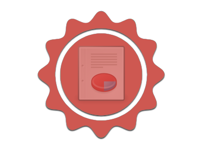

Features

Real Time Tracking
Memantau posisi dan kondisi kendaraan di manapun secara realtime melalui Web Dilacak.com atau service SMS (Applikasi Mobile untuk Android dan iPhone akan tersedia dalam waktu dekat). Frekuensi pelacakan DILACAK.COM adalah yang terbaik, di mana status kendaraan diupdate per 5 detik.Cut off engine
Dalam menghadapi kondisi darurat, pengguna dapat mematikan kendaraan secara remote, melalui SMS atau Web DILACAK.COM. Kendaraan yang telah di "Cut Off", tidak dapat dihidupkan sebelum ada perintah dari pengguna untuk menghidupkan kembali kendaraan.

Fuel and Speed Monitoring
Pengguna dapan memonitor kondisi bensin dan kecepatan kendaraan dari Web DILACAK.COM ataupun melalui notifikasi SMS. Pengguna juga dapat menentukan batas kecepatan maksimum untuk tiap kendaraan. Jika kendaraan melewati batas kecepatan yang telah ditentukan, alert akan muncul di Web DILACAK.COM dan notifikasi sms akan dikirimkan.Historical Report
Status kendaraan dan rute yang telah ditempuh akan dicatat oleh service kami. Catatan report ini dapat dengan mudah dilihat di Web DILACAK.com. Melalui report ini, pengguna dapat dengan mudah menganalisa kinerja kendaraan.
